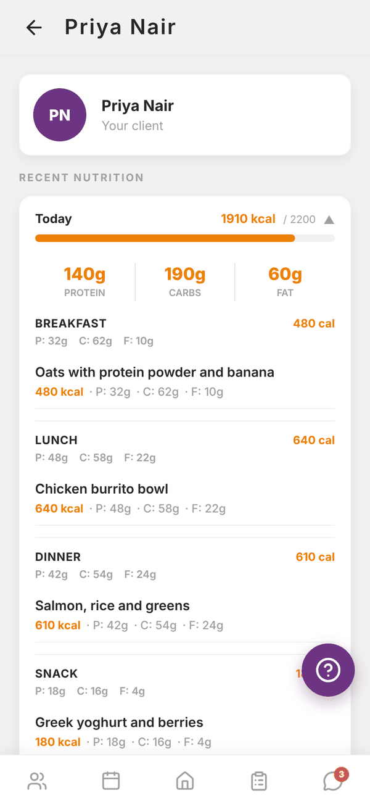
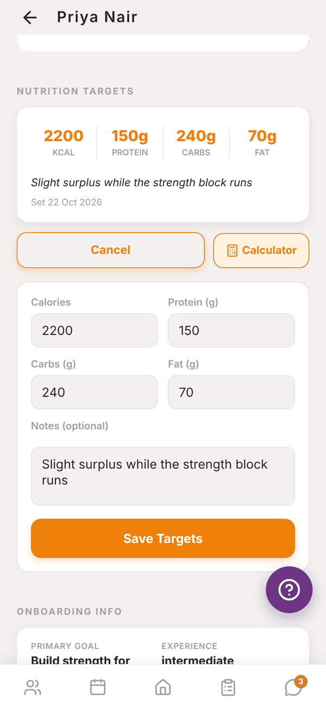
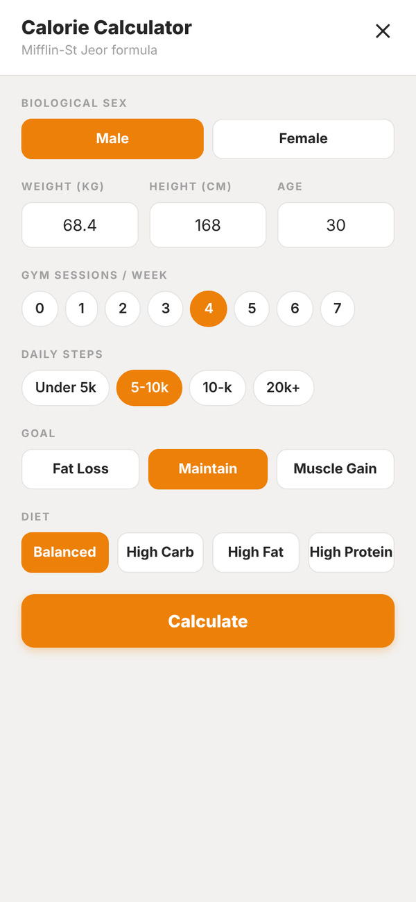

Totality for trainers
Client nutrition and targets
Read a client's food log, set their calorie and macro targets, and use the calorie calculator.
Clients log their food in Totality (or in Totality Nutrition with the same login). You see it on their profile and set the targets they aim for.
Read a client's food log#
Open the client's profile. Recent nutrition shows the last 7 days:
- Each day shows calories eaten against their target, with a bar, and their protein, carbs and fat.
- Tap a day to expand it and see each meal (Breakfast, Lunch, Dinner and Snacks) with its totals and every food logged.
- "No food logged in the last 7 days" means they haven't logged anything recently.


Set their targets#
- Scroll to Nutrition targets on the client's profile.
- Tap Set Targets (or Update Targets if they already have some).
- Enter Calories (or Energy in kJ), Protein (g), Carbs (g) and Fat (g). You need at least one.
- Add Notes (optional), like "Increase protein on training days". The client sees the note.
- Tap Save Targets. "Nutrition targets updated. Client can see them now."
The client's food log in their app now tracks against these numbers.
Use the calculator#
Tap Calculator next to Update Targets to work the numbers out with the Mifflin-St Jeor formula.
- Pick Biological sex. For female clients you can also answer Pregnant or breastfeeding?.
- Enter Weight, Height and Age. These start from the client's onboarding answers where Totality has them.
- Pick Gym sessions / week (0 to 7) and Daily steps (Under 5k, 5-10k, 10 to 20k, 20k+).
- Pick a Goal (Fat Loss, Maintain, Muscle Gain), a Diet (Balanced, High Carb, High Fat, High Protein) and a Pace (Slow, Standard or Fast).
- Tap Calculate. You see protein first, then BMR, TDEE, the target and the recommended macros.
- Tap Use These Targets to fill in the targets form, then Save Targets.

The Calorie Calc tile on Home opens the same calculator for quick sums, without saving to a client.
Units#
Targets show in your energy unit (kcal or kJ) from Settings > Units and region. Saved targets are stored the same way whichever unit you use, so a client who uses kJ sees the right number in kJ.
Questions#
Can my client change their own targets?
Clients see the targets you set in their app. Set or update them here whenever they need to change.
Can I see vitamins and minerals?
Your own food log has See full breakdown with the nutrient breakdown. On a client's profile you see calories and macros.
My client logs in Totality Nutrition. Will I see it?
Yes, if they use the same email and password for both apps. It's one account and one food log.